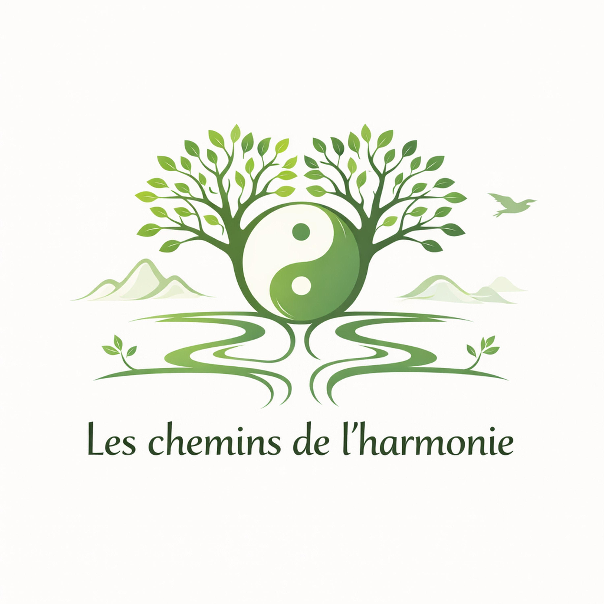

Association à Seysses · Haute-Garonne
L'association "Les chemins de l'Harmonie" a été créée en décembre 2011 par deux sophrologues fraîchement diplômées, dans le but d'offrir à des prix très attractifs cette technique de développement personnel.
L’association a ouvert ses portes à d’autres activités, les chemins étant multiples. Divers ateliers ont été pratiqués au sein de l’association, tels que :
Au fil du temps à partir de 2024 sur deux à trois ans les ateliers se sont progressivement arrêtés.
Seule l'activité Taï-chi-chuan, de style Yang, lignée de Maître Tung, a été conservée dès la saison 26-27.
Elle est proposée à Seysses par une monitrice diplômée de la FFAEMC, les mardis matin, après-midi et en soirée.